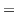

Subsections
外生的なショック（事前に予測できなかった何か）による変化を観察データの中から見出す
- アメリカのホスピタリスト（外来患者を診療せず，入院患者しか診療しない内科医。シフト勤務をしているため，勤務中にたまたま運び込まれた患者を担当する）
ホスピタリストは自分の患者を選べない（患者も担当医を選べない）
- 患者が男性医師と女性医師にランダムに割り付けられている自然実験
（結果）男性医師よりも，女性医師が担当した患者のほうが0.4%2も30日死亡率が低かった。
アメリカ・ノルウェー・カナダ・台湾で行われた双子のデータを用いた研究
- 双子のうち，出生児体重が重い方（介入群）と軽い方（対照群）を比較
- 相対的に栄養状態の良かったほうが重く，最初に生まれる
（結果）出生児体重が重いほうが，その子供が大きくなった後の成績・学歴・収入・健康状態が良好
日本の双子のデータを用いて行った研究（中室）
（結果）出生児体重が重いほど，中学校卒業時の成績が良い
（疑問）
もともとのリスクが大きい多胎児の結果を，普通の胎児に当てはめるのには無理があるのでは？
アルゼンチン保健省による研究
- サンタフェ州では公共の場で完全禁煙（2006年8月）
 介入群とみなす
介入群とみなす
- ブエノスアイレス市では換気装置を設置すれば喫煙可（同時期）
対照群とみなす
（結果）
- 規制によって喫煙率自体は変化しない
- サンタフェ州では心筋梗塞による入院患者がブエノスアイレス市より13%も低くなった（受動喫煙が減ることで非喫煙者が健康になった）
- （その後の研究）2地域でレストランやバーの売上に有意な差はなかった
（疑問）
- 心筋梗塞以外の疾患についてはどうなのか？
- 公共の場が禁煙であっても私的な場で喫煙可なら，家族は恩恵をこうむらないはず。むしろ，全体での喫煙率が変化しないのなら，私的な場での喫煙が増えることで家族の受動喫煙は増えることになるのでは？
- サンタフェ州とブエノスアイレス市で2006年を境に起こった変化は禁煙の有無だけなのか？
Taichi Okumura
2018-01-11